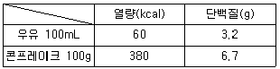
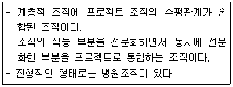
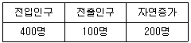
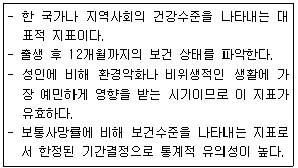

조리산업기사(공통) (2018-03-04 기출문제)
1과목: 식품위생 및 관련법규
1. 식품위생법에서 영업을 하려는 자가 받아야 하는 식품위생에 관한 교육시간은?
- 식품운반업-8시간
- 식품제조ㆍ가공업-6시간
- 집단급식소를 설치ㆍ운영하려는 자-8시간
- 식품접객업-6시간
(정답률: 67%)

2. 식품의 부패 정도를 알아보는 방법이 아닌 것은?
- 관능검사
- 휘발성 염기질소 측정
- 유산균수 측정
- 트리메틸아민 측정
(정답률: 78%)
3. 부패는 주로 어떤 식품성분이 미생물에 의해 분해작용을 받아 유해물질을 생성하는가?
- 지방
- 단백질
- 무기질
- 탄수화물
(정답률: 87%)
4. 식품위생법에서 국민의 보건위생을 위하여 필요하다고 판단되는 경우 영업소의 출입ㆍ검사ㆍ수거 등은 몇 회 실시하는가?
- 1회/년
- 4회/년
- 1회/개월
- 필요할 때마다 수시로
(정답률: 85%)
5. 유해 인공 감미료는?
- 사카린나트륨(sodium seccharin)
- 사이클라메이트(cyclamate)
- D-소비톨(D-sorditol)
- 아스파탐(aspatame)
(정답률: 63%)
6. 과일류, 채소류 등 식품의 살균 목적에 한하여 사용하여야 하며 참깨에 사용하여서는 안되는 첨가물은?
- 글루콘산나트륨
- 과산화수소
- 이산화염소
- 차아염소산나트륨
(정답률: 78%)
7. 노로바이러스에 의한 식중독의 예방대책이 아닌 것은?
- 감염자의 분변, 구토물과 접촉하지 않도록 한다.
- 과일과 채소류는 철저히 잘 씻는다.
- 어패류는 되도록 완전히 가열하여 먹는다.
- 항생재와 예방 백신을 접종한다.
(정답률: 84%)
8. 식품안전관리인증기준(HACCP)의 7원칙 12절차 중 일곱 번째 원칙에 해당하는 것은?
- 위해요소 분석
- 문서화, 기록유지 설정
- 검증절차 및 방법 수립
- 중요관리점(CCP) 결정
(정답률: 71%)
9. 옹기에 김치 등 산성식품을 장기간 담아두었을 때 용출이 우려되는 중금속은?
- 납
- 구리
- 주석
- 수은
(정답률: 73%)
10. 숯불구이와 훈제육 등의 열분해물에서 생성되며 발암성 물질로 알려진 다환방향족 탄화수소는?
- 벤조피렌(benzo(α) pyrene)
- 니트로사민(n-nitrosamine)
- 포름알데히드(foemaldehyde)
- 헤테로고리아민류(heterocyclic amine)
(정답률: 83%)
11. 식중독을 유발하는 해수세균은?
- 살모넬라균-Salmonella typhimurium
- 웰치균-Clostridium perfringens
- 장염비브리오균-Vibrio parahaemolyticus
- 황색포도상구균-Staphylococcus saprophyticus
(정답률: 81%)
12. 곰팡이독(mycotoxin)의 특징으로 옳은 것은?
- 감염성이 있다.
- 저온건조한 환경에서 많이 발생한다.
- 탄수화물이 풍부한 식품이 주요 원인이 된다.
- 잠복기내에는 항생물질로 치료된다.
(정답률: 71%)
13. 소독제와 소독농도의 연결이 틀린 것은?
- 승홍-0.1% 수용액
- 과산화수소-3% 수용액
- 석탄산-3% 수용액
- 크레졸-1% 수용액
(정답률: 57%)
14. 밀봉식품인 통조림이나 병조림에서 발생되기 쉬운 식중독균은?
- 병원성대장균
- 황색포도상구균
- 보툴리누스균
- 살모넬라균
(정답률: 88%)
15. 과일 통조림주스에서 용출될 수 있는 금속물질은?
- 비소
- 아연
- 주석
- 바륨
(정답률: 81%)
16. 조리에 직접 종사하는 사람이 1년에 1회 받아야 하는 건강진단 항목이 아닌 것은?
- 장티푸스
- B형 간염
- 폐결핵
- 한센병 등 세균성 피부질환
(정답률: 67%)
17. 식품위생법에서 허가를 받아야 하는 영업으로 나열된 것은?
- 식품제조ㆍ가공업, 식품첨가물제조업
- 단란주점영업, 식품조사처리업
- 휴게음식점영업, 일반음식점영업
- 식품첨가물제조업, 단란주점영업
(정답률: 79%)
18. 소독의 지표가 되는 소독제는?
- 포르말린
- 크레졸
- 석탄산
- 역성비누
(정답률: 80%)
19. 맥각독에 해당하는 것은?
- 무스카린(muscarine)
- 루브라톡신(rubratoxin)
- 파툴린(patulin)
- 에르고톡신(ergotoxin)
(정답률: 70%)
20. 식품의 발근, 발아 억제법으로 많이 사용되는 살균법은?
- 방사선 조사법
- 저온 살균법
- 초고온 살균법
- 훈연법
(정답률: 72%)
2과목: 식품학
21. 버터의 분산매와 분산질을 순서대로 바르게 짝지은 것은?
- 고체-액체
- 액체-고체
- 고체-고체
- 액체-액체
(정답률: 67%)
22. 황(S)을 함유한 성분은?
- 무스카린
- 사과산
- 비타민 D
- 알리신
(정답률: 60%)
23. 밀가루의 이용에 관한 설명으로 틀린 것은?
- 강력분 제조에는 경질밀이 주로 이용된다.
- 글루텐은 빵의 점탄성을 부여한다.
- 효모에 의한 빵 반죽의 팽창은 산소가 생성되기 때문이다.
- 밀가루에 물을 첨가한 단단한 상태의 반죽을 도우(dough)라 한다.
(정답률: 68%)
24. 쌀밥에 부족한 아미노산을 보충하기 위하여 콩밥을 먹을 경우 보완할 수 있는 아미노산은?
- 라이신(lysine)
- 글루텔렌(glutelin)
- 아르기닌(arginine)
- 오리제닌(oryzeniin)
(정답률: 77%)
25. 김치, 오이절임 등에서 녹색채소가 갈색으로 변환되는 이유는 클로로필의 Mg이 무엇으로 치환되었기 때문인가?
- Cu
- H+
- Fe
- Zn
(정답률: 53%)
26. 밀가루를 원료로 만든 것이 아닌 것은?
- 마카로니
- 당면
- 중화면
- 우동면
(정답률: 88%)
27. 산성 식품과 알칼리성 식품에 대한 설명 중 틀린 것은?
- 육류와 난류가 산성 식품인 것은 인(P)과 황(S)이 많기 때문이다.
- 해조류가 알칼리성 식품인 것은 칼륨(K), 칼슘(Ca)의 함량이 많이 때문이다.
- 채소와 과일류가 알칼리성 식품인 것은 칼륨(K), 나트륨(Na), 칼슘(Ca)이 많기 때문이다.
- 곡류가 산성 식품인 것은 칼슘(Ca)과 인(P)이 많이 때문이다.
(정답률: 64%)
28. 단단한 젤리가 만들어지는 조건이 아닌 것은?
- 펙틴 분자량이 클 때
- pH가 알칼리성일 때
- Ca2+을 첨가할 때
- 설탕의 양을 증가시킬 때
(정답률: 54%)
29. 과일의 가공ㆍ저장에 대한 설명으로 틀린 것은?
- 바나나는 수확 후에도 왕성한 호흡 작용과 증산 작용으로 신선도가 떨어진다.
- 사과와 복숭아는 과육 내 폴리페놀류가 산화효소의 작용으로 갈변된다.
- 마멀레이드는 감귤류의 과육과 과즙을 젤화시킨 것이다.
- 젬은 유기산과 펙틴이 있는 과일에 설탕을 넣어 젤화시킨 것이다.
(정답률: 69%)
30. 국수제조 시 소금을 첨가하는 가장 중요한 이유는?
- 미생물의 번식을 방지하기 위하여
- 프로테아제(protease)에 의한 글루텐 분해를 막기 위하여
- 변색을 막기 위하여
- 면을 부드럽게 하여
(정답률: 76%)
31. 식육의 주된 육색소인 미오글로빈(myoglobin)이 계속 산화되어 형성되는 갈색의 물질은?
- 옥시미오글로빈(oxymyoglobin)
- 니트로소미오글로빈(nitrosomyoglobin)
- 메트미오글로빈(mtrmyoglobin)
- 설프미오글로빈(sulfmyoglobin)
(정답률: 57%)
32. 치즈의 특성에 영향을 주는 요인으로만 묶여지지 않은 것은?
- 온도, 압력
- 습도, 숙성기간
- 곰팡이의 크기, 응고물의 침전방법
- 생산된 유산균, 수용성 비타민의 양
(정답률: 68%)
33. 아침식사로 우유 1컵(200mL)과 콘플레이크(50g)를 먹었다면 섭취한 총열량과 총단백질량은?

- 220kcal, 4.95g
- 310kcal, 9.75g
- 440kcal, 9.90g
- 500kcal, 13.10g
(정답률: 67%)
34. 단순단백질 중 알코올에 녹는 것은?
- 알부민(albumin)
- 글루텔린(glutelin)
- 글로불린(glpbulin)
- 프롤라민(prolamin)
(정답률: 44%)
35. 유지가공품에 대한 설명으로 틀린 것은?
- 샐러드유는 탈납(winterization) 공정을 통해 저온에서 굳는 식물 식물성유의 지방성분을 제거한 것이다.
- 경화유는 식물성 기름이나 어류 등의 액체기름에 수소를 첨가하여 만든 것이다.
- 마가린은 경화유로서 식물성 유지에 유화제를 첨가하여 만든 유중수적형이다.
- 쇼트닝은 버터의 대용으로 생산되어 수분을 10% 정도 함유한다.
(정답률: 55%)
36. 전분을 산 또는 효소로 가수분해하여 제조하며 조리에 많이 이용되는 전분 가공품은?
- 펙틴
- 물엿
- 한천
- 젤라틴
(정답률: 70%)
37. 지용성 비타민이 아닌 것은?
- 비타민 A
- 비타민 B1
- 비타민 D
- 비타민 E
(정답률: 73%)
38. 미각의 생리현상에 대한 설명 중 틀린 것은?
- 커피에 설탕을 섞었을 때 쓴맛이 단맛에 의하여 약화되는 것은 맛이 억제효과이다.
- 흑설탕이 흰설탕 보다 단맛이 강하게 느껴지는 것은 맛의 상승효과이다.
- 김치의 짠맛과 신맛이 서로 상쇄되어 조화를 이루는 것은 맛의 상쇄효과이다.
- 오징어를 먹을 직후에 식초나 밀감을 먹었을 때 쓴맛을 느끼는 것을 맛의 변조효과이다.
(정답률: 71%)
39. 유지의 분류 중 반건성유인 것은?
- 아마인유
- 올리브유
- 땅콩기름
- 참기름
(정답률: 56%)
40. 감자를 잘라 방치하면 티로시나아제(tyrosinase)에 의해 갈변되는데 이 때 최종 생성되는 갈색 색소는?
- 멜라닌(melanin)
- 프르푸랄(furfural)
- 퓨란(furan)
- 휴먼(humin)
(정답률: 71%)
3과목: 조리이론 및 급식관리
41. 육류의 가공에 관한 설명으로 틀린 것은?
- 베이컨은 돼지의 복부육을 염지한 후 훈연하거나 열처리한 것이다.
- 염지는 소금과 기타 첨가물을 혼합하여 고기에 첨가한 것으로 보수성과 결착성을 높일 수 있다.
- 햄은 일반적으로 돼지의 뒷다리 부위를 훈연한 것으로 본인햄, 본레스햄, 로인햄, 숄더햄, 프레스햄 등이 있다.
- 소시지 중 비엔나 소시지는 드라이 소시지(dry sausage), 살라미는 도메스틱 소시지(domestic sausage)에 속한다.
(정답률: 71%)
42. 한 달의 임금지급액은 1500000원이고, 총작업시간은 320시간이다. 제품 200000개를 제조하는데 34시간을 사용하였다면, 이 제품에 부과할 노무비는?
- 4687원
- 44117원
- 150000원
- 159375원
(정답률: 54%)
43. 생선을 통으로 구입하여 횟감으로 썰었더니 무게가 5kg이 나왔다면 이 생선의 원래 무게는 약 얼마인가? (단, 이 생선의 폐기율은 65%이다.)
- 7.7kg
- 11.0kg
- 12.0kg
- 14.3kg
(정답률: 59%)
44. 전분의 노화에 대한 설명으로 옳은 것은?
- 당류는 노화를 촉진한다.
- 노화를 방지하려면 0~5℃ 정도 냉장보관한다.
- 모노글리세라이드와 같은 유화제를 첨가하면 노화가 방지된다.
- 아밀로오스보다 아밀로펙틴 함량이 많은 전분이 노화가 더 빠르다.
(정답률: 47%)
45. 생선조리에 관한 설명 중 옳은 것은?
- 선어회는 사후경직기를 지나면서 IMP, 유리아미노산 등의 감칠맛이 생긴다.
- 흰살생선은 어취가 많으므로 고춧가루 등의 양념을 하는 것이 좋다.
- 생선 소금구이의 소금의 양은 생선의 0.5% 정도가 적당하다.
- 전이나 튀김은 지방함량이 많은 붉은살 생선이 적당하다.
(정답률: 58%)
46. 유지류에 대한 설명으로 틀린 것은?
- 빵에 버터나 마가린을 펴 바를 수 있는 것은 가소성 때문이다.
- 크리밍성은 쇼트닝이 가장 높고 마가린, 버터 순으로 낮다.
- 쇼트닝을 페이스트리에 사용하면 바삭해진다.
- 라드는 정제유를 수소화시켜 가소성의 고체상태로 바꾼 순수지방을 말한다.
(정답률: 63%)
47. 습열조리 시 조리온도가 높은 것부터 낮은 순서로 나열된 것은?
- 보일링(boiling)＞시머링(simmering)＞포우칭(poaching)
- 시머링(simmering)＞포우칭(poaching)＞보일링(boiling)
- 보일링(boiling)＞포우칭(poaching)＞시머링(simmering)
- 시머링(simmering)＞보일링(boiling)＞포우칭(poaching)
(정답률: 66%)
48. 식품재료에 직접 불이 닿게 하여 조리하는 기구는?
- 브로일러(broiler)
- 오븐(oven)
- 그리들(griddle)
- 레인지(range)
(정답률: 62%)
49. 달걀의 기능에 대한 설명이 옳지 않은 것은?
- 달걀흰자는 거품을 내어 케이크나 오믈렛과 같은 혼합물에 섞으면 팽창제로서의 역할을 하여 부피가 증가하고 부드러워진다.
- 카스테라 제조시 레시틴의 유화성과 보수성 작용으로 부드러운 조직감을 갖게 하는데 난황은 난백에 비해 4배의 유화력을 가지고 있다.
- 달걀은 응고되면 음식을 걸쭉하게 만드는 농후제 역할을 하므로 콘소메, 머랭, 푸딩을 만들 때 달걀 푼 것을 넣어 걸쭉하게 한다.
- 거품을 낸 달걀흰자를 샤베트나 캔디 만들 때 섞어주면 결정체 형성을 방해하는 간섭제가 되어 입자를 미세하게 만들어 준다.
(정답률: 61%)
50. 배식하기 전 음식을 따뜻하게 보관하는 온장고의 적정 내부 온도는?
- 100℃
- 80℃
- 65℃
- 40℃
(정답률: 72%)
51. 한천조리에 대한 설명으로 맞는 것은?
- 설탕을 첨가하면 겔의 탄성이 감소한다.
- 우유를 첨가하면 젤강도가 증가된다.
- 겔화된 것은 100℃ 이하에서는 녹지 않는다.
- 한천젤리는 만든 후 시간이 경과하면 이수현상이 발생한다.
(정답률: 56%)
52. 당의 결정화를 이용한 것이 아닌 것은?
- 퍼지(fudge)
- 폰당(fondant)
- 마시멜로(mashmellow)
- 디비너티(divinity)
(정답률: 61%)
53. 소고기 조리에 대한 설명으로 틀린 것은?
- 국끓이기에 적당한 부위는 사태와 양지이다.
- 장조림에 사용되는 고기는 섬유가 길고 결체조직이나 마블링 함량이 적어야 한다.
- 편육은 처음부터 찬물에 끓이면 맛성분이 많이 용출되어 좋다.
- 스테이크는 먼저 센 불에 구워 단백질을 응고 시킨 후 약한 불에서 굽는다.
(정답률: 75%)
54. 물가상승시 소득세를 줄이기 위해 식품비를 최대화하고 재고가치를 최소화하고 싶을 때 사용하는 재고관리기법은?
- 선입선출법
- 후입선출법
- 이동평균법
- 총평균법
(정답률: 60%)
55. 조리규모가 커지면서 오물이 많을 때 주방청소를 효과적으로 하기 위하여 설치하는 것은?
- 급탕기
- 곡선형 트랩
- 트렌치
- 디스포저(sidposer)
(정답률: 75%)
56. 김의 향기 성분은?
- 글리신
- 이노신산
- 디메틸설파이드
- 알긴산
(정답률: 51%)
57. 채소류의 맛 성분이 옳지 않은 것은?
- 오이꼭지의 쓴맛 : 쿠크르비타신(cucurbutacin)
- 가지의 떫은맛:후물론(humulon)
- 죽순의 아린맛:호모겐티스산(homogentisic acid)
- 고추의 매운맛:캡사이신(capsaicin)
(정답률: 64%)
58. 밀가루와 물을 섞은 반죽을 체에 걸러 물로 계속해서 씻어주면 남게되는 단백질은?
- 글리시닌(glycinin)
- 글리아딘(glyadin)
- 글루테닌(glutenin)
- 글루텐(gluten)
(정답률: 66%)
59. 하루 필요 열량이 2100kcal일 때 20%를 단백질로 얻으려면 섭취해야 하는 단백질 양은?
- 100g
- 1⑤g
- 115g
- 125g
(정답률: 64%)
60. 육류를 연화하기 위해 사용하는 과일과 연육효소가 바르게 짝지어진 것은?
- 무화과-브로멜린(bromelin)
- 키위-액티니딘(actinidin)
- 파인애플-피신(ficin)
- 파파야-진저론(zingerone)
(정답률: 76%)
4과목: 공중보건학
61. 물의 정수법 중 완속사여과법에 대한 설명이 아닌 것은?
- 생물막제거법은 사면대치로 한다.
- 약품으로 침전을 시킨다.
- 광대한 면적이 필요하다.
- 급속여과법에 비해 건설비가 많이 든다.
(정답률: 60%)
62. 보건행정의 관리과정 중 다음 내용이 설명하는 조직은?

- 프로젝트 조직
- 공식적 조직
- 매트릭스 조직
- 비공식적 조직
(정답률: 62%)
63. 공기의 조성 중 가장 많은 비율을 차지하는 것은?
- 산소
- 질소
- 이산화탄소
- 이르곤
(정답률: 71%)
64. 물을 여과할 때 여과막의 역할이라고 볼 수 없는 것은?
- 세균 여과
- 잔류염소 여과
- 부유물질 여과
- 조류 여과
(정답률: 44%)
65. 다음 표를 보고 인구증가 의미 중 사회증가에 의한 변동인원은?

- 300명
- 500명
- 600명
- 700명
(정답률: 65%)
66. 산업보건의 중요성에 대한 설명으로 옳지 않은 것은?
- 근로자의 인권문제로 대두되었기 때문이다.
- 노동력 유지ㆍ증진은 생산성과 품질 향상으로 연결되기 때문이다.
- 근로자의 질병을 치료하고 관리해야 하기 때문이다.
- 급격한 산업발달로 산업장의 근로 인구가 많아졌기 때문이다.
(정답률: 57%)
67. 돼지고기를 불완전하게 익혀먹었을 경우 감염될 수 있는 기생충은?
- 유구조충
- 구충
- 편충
- 무구조충
(정답률: 77%)
68. 적조현상을 가속화시키는 원인이 되는 것은?
- 수온
- 가스
- 카드뮴
- PCB
(정답률: 66%)
69. 질병 발생의 3대 요소는?
- 숙주, 환경, 병인
- 유전, 소질, 환경
- 병인, 환경, 소질
- 병인, 감수성, 유전
(정답률: 73%)
70. 파리가 전파할 가능성이 있는 질병들로 바르게 연결된 것은?
- 장티푸스, 세균성이질, 콜레라
- 장티푸스, 사상충증, 홍역
- 회충, 디프테리아, 일본뇌염
- 파상풍, 홍역, 파라티푸스
(정답률: 70%)
71. 소음이 인체에 주는 피해가 아닌 것은?
- 작업능률 저하
- 혈압저하
- 위장기능 감퇴
- 청력장애
(정답률: 67%)
72. 대기를 오염시키는 물질 중 형태에 따른 분류 내용으로 옳은 것은?
- 연무는 승화, 증류, 화학반응에 의해서 생긴 기체가 응축할 때 생기는 고체입자이다.
- 매연은 아주 작은 수많은 물방울이 공기 중에 떠 있는 기체입자이다.
- 분진은 물질의 연소, 제조, 가공과정에서 발생하는 매연, 회분, 철분 등의 입자이다.
- 훈연은 작은 크기의 탄소입자로 연료의 불완전연소에 의해 생기는 입자이다.
(정답률: 65%)
73. 도금작업, 합금제조, 합성수지 등의 제조산업장에서 발생하여 폐기종이나 급성폐렴을 유발하는 것은?
- 수은
- 크롬
- 납
- 카드뮴
(정답률: 49%)
74. 자외선의 인체에 미치는 영향에 대한 설명 중 틀린 것은?
- 신진대사촉진
- 백내장발생
- 피부암발생
- 혈압상승
(정답률: 60%)
75. 접촉감염지수(감수성지수)가 바르게 표시된 것은?
- 홍역 95%
- 디프테리아 60%
- 백일해 40%
- 성홍열 10%
(정답률: 63%)
76. 수인성 감염병에 해당되지 않는 것은?
- 콜레라
- 장티푸스
- 결핵
- 유행성간염
(정답률: 44%)
77. 공중보건수준 평가에서 다음 설명에 해당하는 보건지표는?

- 질병이환률
- 모성사망률
- 영아사망률
- 비례사망지수
(정답률: 83%)
78. 요코가와흡충의 제 2중간숙주는?
- 참게
- 은어
- 가재
- 다슬기
(정답률: 61%)
79. 검역감염병으로만 짝지어진 것은?
- 홍역, 황열, 페스트
- 황열, 페스트, 콜레라
- 콜레라, 백일해, 장티푸스
- AIDS, B형간염, 장티푸스
(정답률: 46%)
80. 장기 음용한 물에 다량함유 되어 있을 경우 반상치를 일으키는 것은?
- 염소
- 규소
- 불소
- 비소
(정답률: 67%)